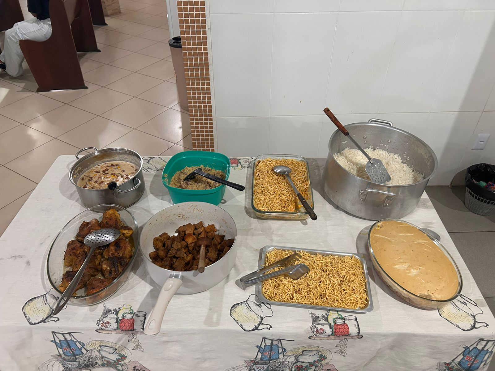
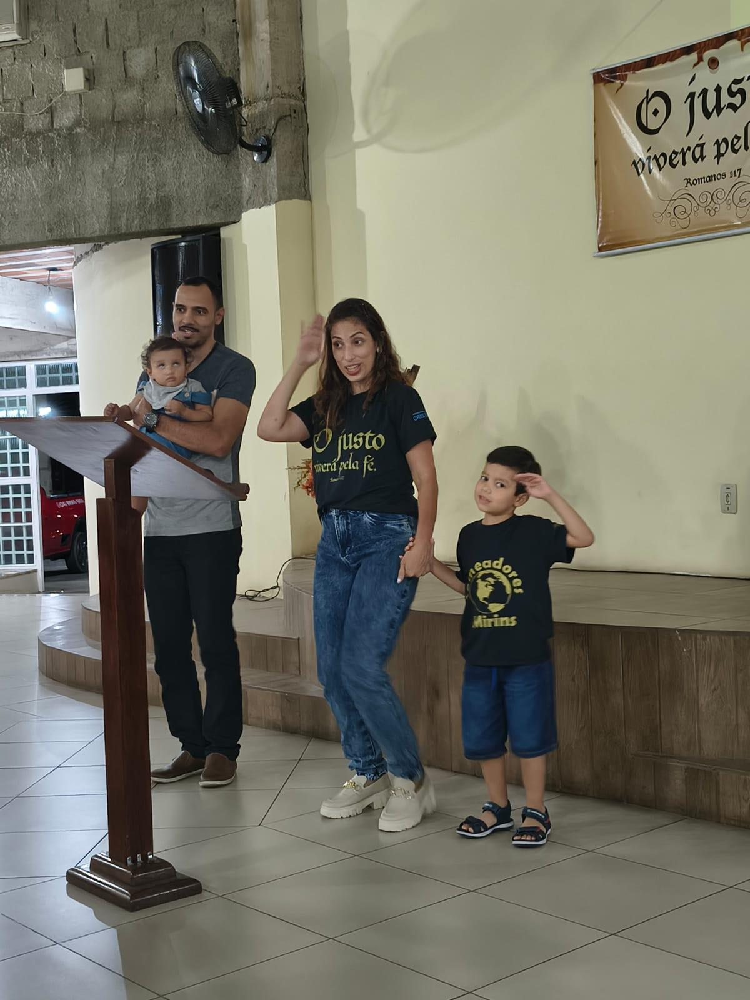
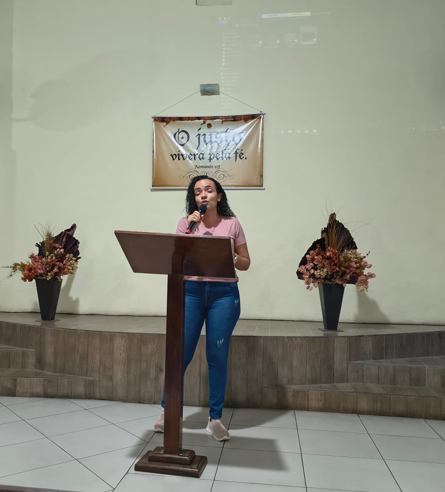

"Eu sou a ressurreição e a vida; quem crê em mim, ainda que morra, viverá."
Carregando versículo...
A Igreja Evangélica Cristo Vive de Paracambi/RJ é uma comunidade de fé comprometida em proclamar o Evangelho de Jesus Cristo e transformar vidas através do amor de Deus.
Anunciar a vida abundante em Cristo, discipular vidas e ser uma igreja relevante na comunidade de Paracambi.
Ser uma igreja que impacta vidas, famílias e a sociedade, levando esperança e transformação através da Palavra de Deus.
Projeto Futuro
Venha adorar conosco! Todos são bem-vindos.
Dia: Terça-feira
Horário: 19:30h
Momento especial de oração e busca a Deus
Dia: Domingo
Horário: 9:00h
Estudo sistemático da Palavra de Deus
Dia: Domingo
Horário: 19:00h
Culto principal com toda a família
Dia: Último Domingo de cada mês
Horário: 19:00h
Culto especial com mensagem, participação dos membros com louvores, leitura de versículos, testemunhos e comemoração dos aniversariantes do mês.
📸 Veja as Fotos/Vídeos dos CultosCada membro tem um lugar especial no Corpo de Cristo
Conduzindo a igreja em momentos de adoração e exaltação ao nome do Senhor através da música.
Equipe de Louvor
Ensaio
Dedicado ao cuidado, ensino e formação espiritual das crianças, proporcionando um ambiente seguro e acolhedor.
Crianças EBD
Atividades
🌟 Site Pequenos Discípulos
📖 Visitar Site CompletoMomentos especiais da nossa comunidade de fé
Cultos
Confraternizações
Ações Sociais
Eventos
Batismos
EBD
Assista mensagens, cultos e conteúdos especiais
Fique por dentro dos próximos eventos
Pastor Presidente
Servo de Deus comprometido com a obra do Senhor, dedicado ao pastoreio e cuidado do rebanho.
"Meu desejo é ver vidas transformadas pelo poder do Evangelho e famílias restauradas pelo amor de Cristo."
Compartilhe seu pedido conosco. A oração move o coração de Deus!



Vídeo em breve
Fotos e vídeos do culto especial
Sua contribuição é fundamental para o crescimento do Reino de Deus!
Estrada RJ-127, 9737
Lages, Paracambi - RJ
CEP: 26.600-000
(21) 98786-0391
Terças: 19:30h
Domingos: 9:00h e 19:00h